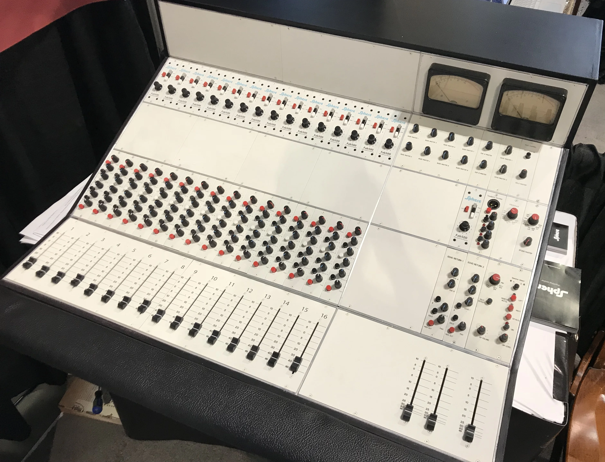
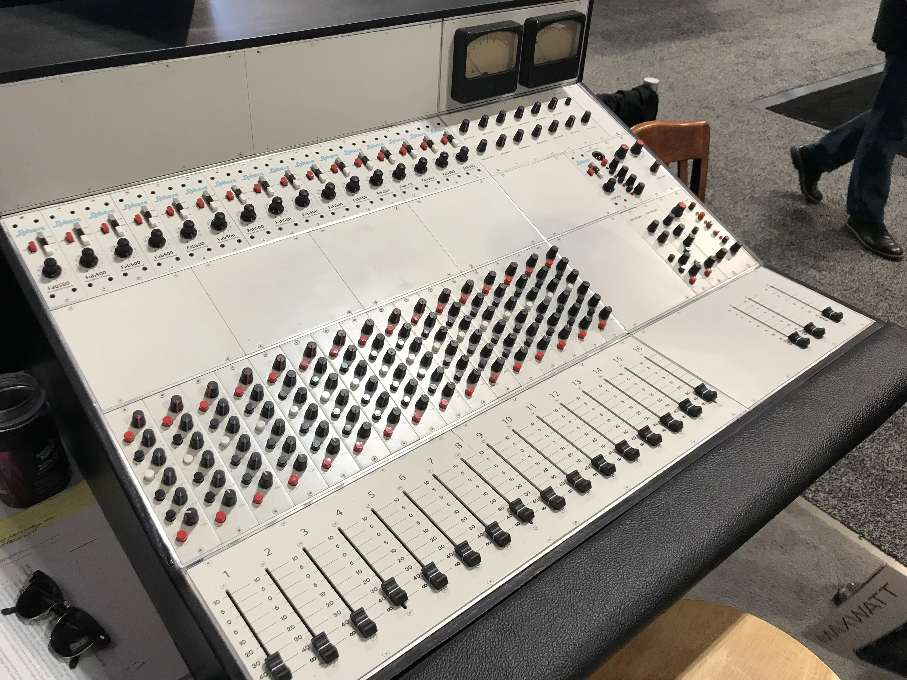
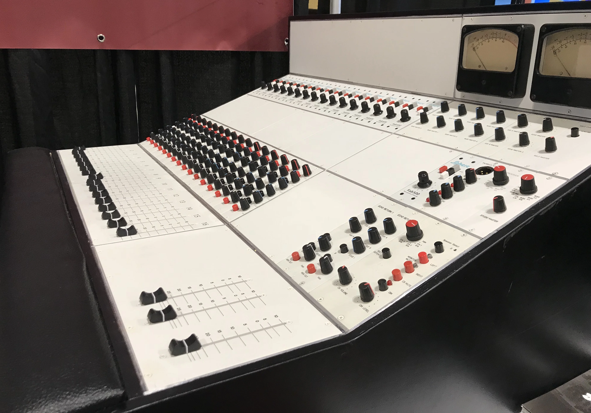
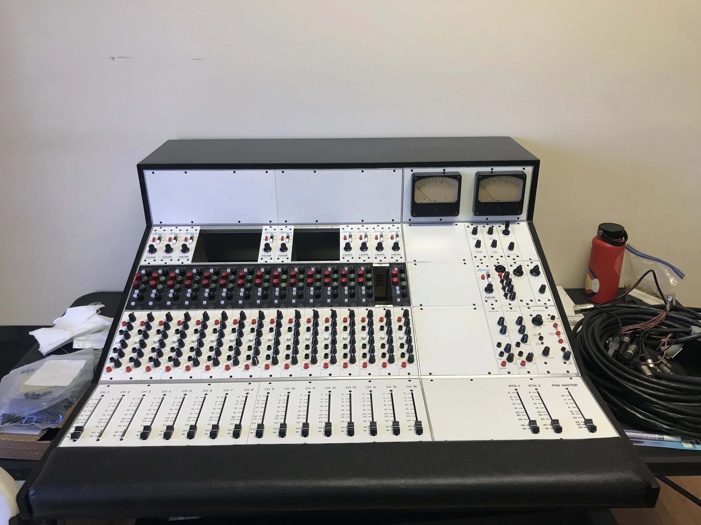
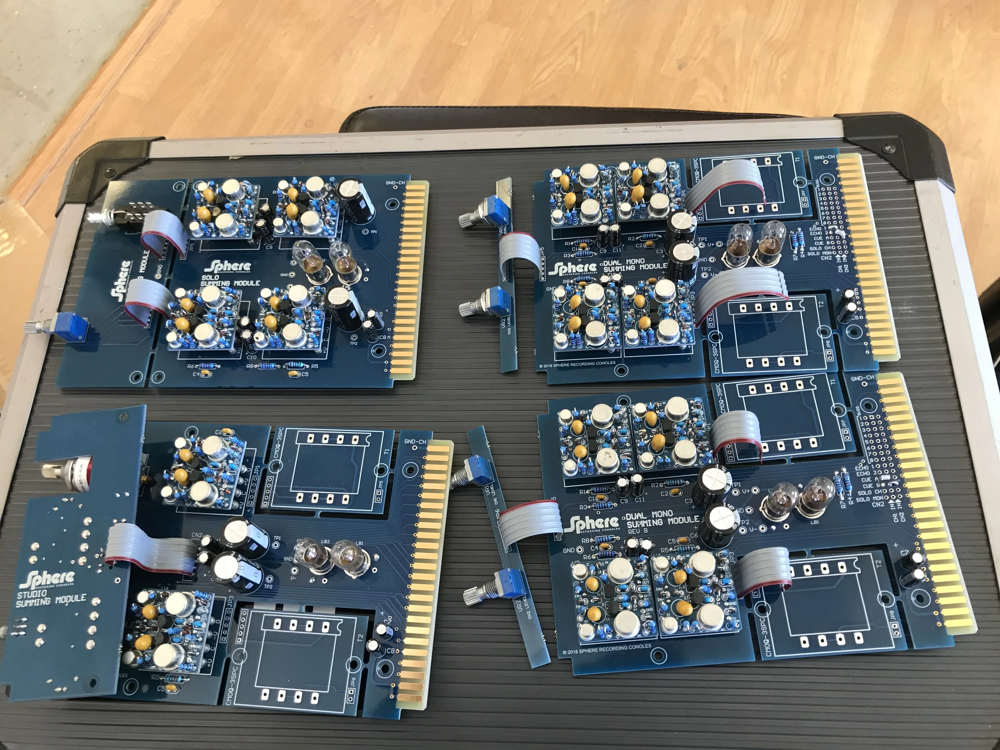
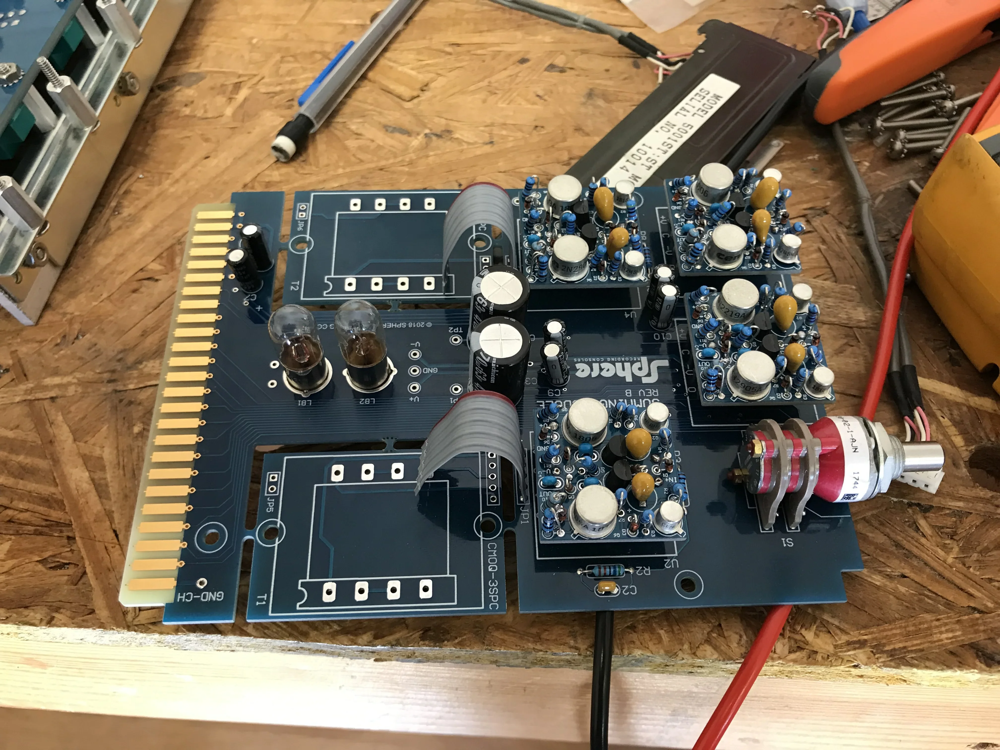
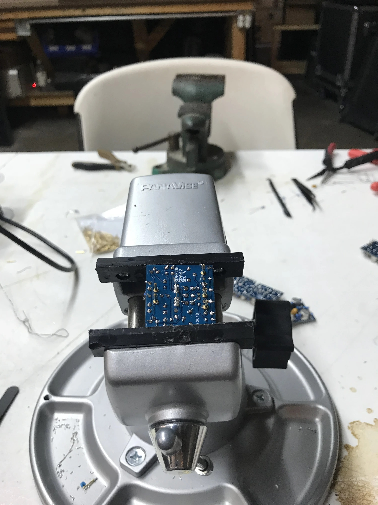
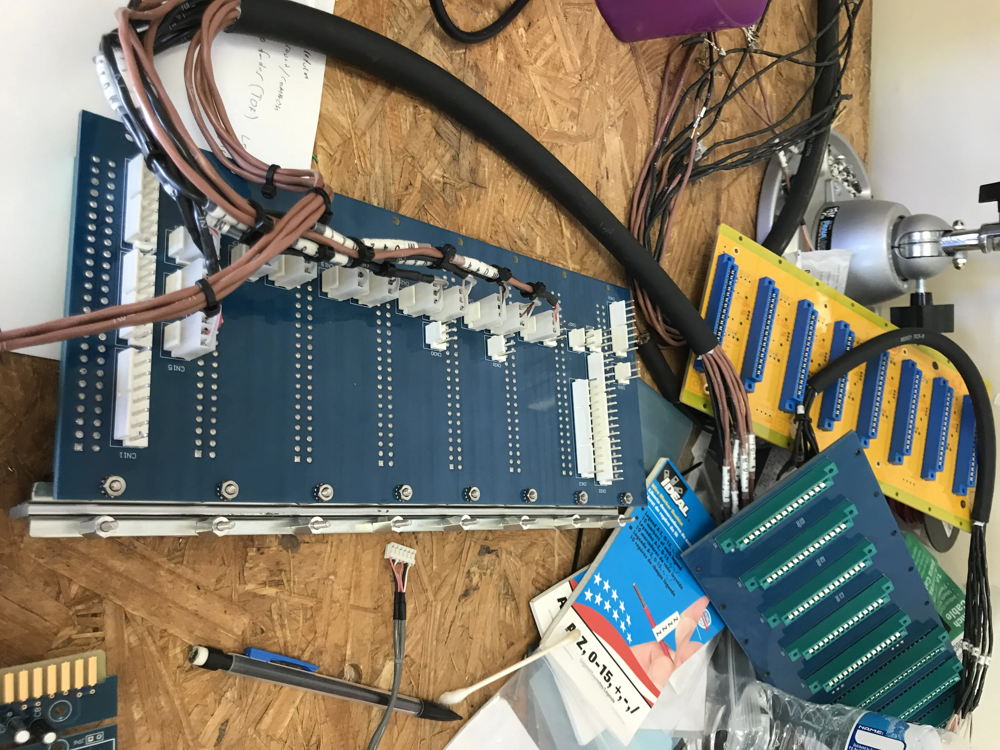
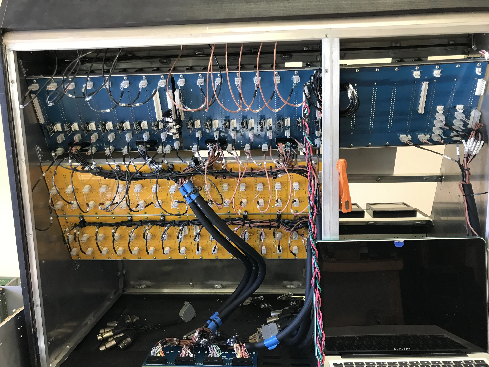
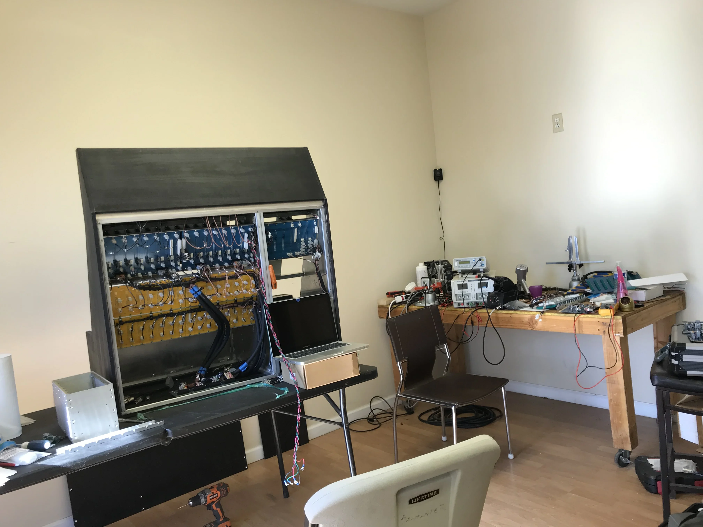

Sphere Eclipse Console
During my time at Mtroniks in 2018 I helped build this sweet Sphere Eclipse recording console. This console is a modern continuation of the classic Sphere recording desk design. Sphere consoles built a strong reputation in American studios during the 1970s, and the Eclipse Alpha 2 was developed to carry that sound and workflow into a new production model.

Console Overview
The Eclipse Alpha 2 is a 16-channel console with eight mono busses and a stereo master bus. The system is equipped with 16 Sphere Fab500 discrete mic preamps, 16 Sphere 900 graphic EQs, two aux sends, two cue sends, and 16 direct outputs. The project reflected both the heritage of analog console design and the practical demands of modern manufacturing and assembly.



My Work
My role focused on hands-on console assembly, board population, wiring, and physical integration of signal and power systems. This work required careful attention to mechanical layout, soldering quality, and reliable routing inside the console chassis.



- Assembled console components including cables, op amps, and connectors.
- Populated op amp boards and prepared assemblies for production.
- Dipped boards in a solder bath as part of the assembly process.
- Mounted the preamp and EQ sections into the console housing.
- Soldered Molex connectors to the bus board.
- Built multi-wire power and signal busses by cutting, wrapping, and isolating cable runs.
- Designed the internal wiring layout and bus routing for signal and power throughout the console.
- Installed and tested VU meter including lightbulb receptacle, wiring and chassis mount
Pinout Header Assembly
A major part of the wiring work involved pinout header assembly for balanced audio and power distribution. That meant building headers with a consistent grounding strategy across ground connection points, shield ground, and chassis link connections so signal wiring stayed organized and noise performance stayed under control.
For the balanced audio paths, pin assignments had to stay consistent through each header and connector set. Pin 2 carried the positive phase and mapped to the 1/4-inch tip, while Pin 3 carried the negative phase and mapped to the 1/4-inch ring. In the 1/4-inch TRS Omniborn wiring, the ring handled the input +4 dB negative phase and the tip handled the input -4 dB positive phase, so header assembly directly affected signal polarity and clean interfacing between modules and external connections.
I also assembled and routed feed and supply connections tied to the console's power infrastructure, including Radial J48 feed points and the main rail distribution. Those headers carried +15 VDC, power ground at the 0 V reference, -15 VDC, and +48 VDC phantom power, which required careful separation between power, shielding, and audio signal paths throughout the console frame.


Project Takeaway
This build combined electronic assembly, wiring discipline, and system-level layout work. It gave me experience contributing to a large-format analog audio console where reliability, serviceability, and clean signal routing all mattered to the final result.

Source context for the console overview was drawn from your notes based on the Sound On Sound Summer NAMM 2018 coverage of the Sphere Eclipse Alpha 2.